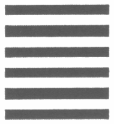

KIỀN

Bát Thuần Kiền
KINH VĂN
Âm
$%° 7 Kiên, Nguyên, Hanh, Lợi, Trinh
Nghĩa
Kiền có bốn đức: Nguyên, Hanh, Lợi,
GIẢI THÍCH
Cả sáu hào đều dương nên gọi là Kiền. Kiền là kiện (mạnh mẽ) vậy. Tại trời là khí dương, tại đất là cứng, tại người là trí là nghĩa, tại tính là chiếu, tại tu là quán. Lại nữa, tại khí giới?) là che; tại thân thể là đầu, là thiên quân; tại nhà là chủ; tại nước là vua; tại thiên hạ là đề. Có kẻ dùng đạo trời để giải thích, có kẻ dùng đạo vua để giải thích, đều là phiến điện một góc. Mạnh mẽ thì việc làm không bị ngăn ngại, cho nên gọi là nguyên, hanh. Nhưng cần nên thấy sự mạnh mẽ này ở tại việc nào, thì đó là sự răn đe lợi trinh. Thánh nhân khai thị cho học giả chủ yếu là ở điều này; cho nên mới gọi tu đạo là giáo®) vậy. Phàm mạnh mẽ về thượng phẩm thập tất rơi vào chốn địa ngục. Mạnh mẽ về trung phẩm hạ ác tất rơi vào cõi súc sinh. Mạnh mẽ về hạ thập ác tất rơi vào chốn ma quỷ. Mạnh mẽ về hạ phâm thập thiện tất thành A Tu La. Mạnh mẽ về trung phẩm thập thiện tất sinh vào cõi người. Mạnh mẽ về thượng phẩm thập thiện tất sinh vào cõi trời. Mạnh mẽ về thượng phẩm thập thiện mà còn kiêm tu thiền định tất sinh vào cõi sắc, vô sắc giới. Mạnh mẽ về trung phẩm thập thiện mà còn kiêm tu tứ đế, thập nhị nhân duyên tất đạt được quả chứng nhị thừa. Mạnh mẽ về thượng thượng phẩm thập thiện, mà có thể tự lợi lợi tha tất thành Bồ Tát. Mạnh mẽ về thượng thượng thập thiện, mà QUYỂN 1 33